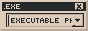
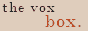

Welcome to My Hyperlink Directory
All the various sites on the web are connected by Hyperlinks, which help you travel from webportal to webportal. Before you there stands my collection of these hyperlinks, gathered over the years. They are not necesarrily things I have an interest in, but things that I believe may present some use to someone at some point in the future.

Neocities
- Friends
- - Cidoku
- - Cyberpunk Corner
- - Cybertomboy
- - didn't ask
- - ISM Ring of Power
- - i will never be happy
- - Literature Girl
- - Lyrical Tokarev
 - Ongezell
- Ongezell- - Page's Pages
- - PLEURODELINAE
- - PNN America
- - sugarteara
- - Temina
- - Þe Satyrs’ Foreſt
- Volk's Valhalla(I hope he's alright)- - Webpage-1990-Colourised
- Inspiring Website - [explanation[explanation]: You see, dear reader, these websites not only have an astounding sense of design, like most websites I tend to follow, but they have been instrumental in inspiring the style and design of this website. ]
- - errormine
- - Ongezell
- - PLEURODELINAE
- - Primordial Dungeon
- - ribose
 - SECRET GARDEN
- SECRET GARDEN- - Þe Satyrs’ Foreſt
- - Zeus of the Crows
- Mutuals
- - Abyssal
- - amriel
- - Angel's Roam
- - AntiKrist
- - Apnet
- - Arkm's World
- - arlita's internet page
- - bean's bottles
- - bruisedgh0st
- - ùñáùñöùñóùñûùñäùñõùñéùñë
- - cabbage sorter
- cat corner entryway - Channel Onion
- Channel Onion- - Cidoku
- - circuitghost
- - connor7000
- - Cyberpunk Corner
- - Cybertomboy
- - Dannarchy
- - didn't ask
- - electropsyoptica
- - errormine
-  - exephile
- - Family Guy Madness
- - feeling machine.
- - Fidomanin
- - Flying with Quills
- - HedgeWytchery
- - i will never be happy
- - imaginings.
- - ISM Ring of Power
 - Jerry Lehr's Shell
- Jerry Lehr's Shell- - Keltokel
- - Lazy Bones
- - The Literary Bisexual
- - Literature Girl
- - Lotus's Cube
- - Lyrical Tokarev
- - Melon King
- - Mister Dizzy
- - Moheb Rofail
- - Monastery of St.Blamensir
- - Motte Motte
- mutagensoup- - Myrrh
- - New Digital Era
- - The 0bserver
- - Ongezell
- - PAINTKILLER
- - Page's Pages
 - ⸸ pandæmonium ⸸
- ⸸ pandæmonium ⸸- - PLEURODELINAE
- - PNN America
- - Preserved Figs
- - Primordial Dungeon
- purinland - RPGFAN54 (work in progress)
- RPGFAN54 (work in progress)- - Sable Cradle
- - Schizopunk Media
- - SECRET GARDEN
- - SKULLMUND
- - sleepy sage
- - sugarteara (moved to feeling machine)
- - Temina
- - Þe Satyrs’ Foreſt
- - TRAUMAKYABAJOU
- - Unimaginable Heights
- - Velvet Blue
- vincent's dungeon- Volk's Valhalla-  - The Vox Box
- - Wave MBU
- - Webpage-1990-Colourised
- - Zeus of the Crows
Most Useful Websites
Across my journey as a webmaster, and general internet user, I found a few websites that I kept coming back to. These may be specific to my uses, however I find them to be the most useful websites (and tools) on the internet, and I am forever indebted to the people who created them and allowed them to flourish.
- DaFont
- The single largest archive of free (in part or fully) fonts on the internet.
- Ezgif
- You may not be able to appreciate how much gifs have shaped the internet, especially neocities. However, if you ever find yourself in need of a tool to make or edit one, this free website is by far the best.
- Old Book Illustrations
- From Old Books
- This website, and the following one, are for certain the ones most applicable to me. However, if you feel like sprucing up your website, or some other form of craft, with the decorations of artists long departed from this world, these two are the prime places for it.
- KH Insider
- To my knowledge, the most comprehensive library of video game music out there. So particular I even find, now and then, pieces not even available on Youtube. Great resource for indie webmasters who enjoy to overuse autoplay music (like me).
- WebAmp
- SCM Player
- Now that you have the music you plan to use, you need a player! However, as we know, the html audio tag often gets boring, or may not fit in with your style, or you may just want a greater library of songs on a single page! These two players have you covered, and they work fantastically, with plenty of themes to satiate your visual too.
- Winamp Skin Museum
- Custom Skins for SCM Player
- Here are the aforementioned skins. However it is quite easy to make your own ones! Do give it a try!
- Archive dot today
- The truest website archive out there. It's library may not be as extensive as that of the Wayback Machine, however they swear by preserving the internet in it's true form, without bending to bad actors.
- The Internet Archive
- I have my personal gripes with the Internet Archive, specifically regarding censorship and removal of data on command from the Wayback Machine, however when you're under as much fire as they have been from litigious industries like the print publishing one it's hard to blame them (hard but not impossible). Very good public library, particularly of software.
- My Abandonware
- The largest library of "abandonware" video games, games whose publisher has gone bankrupt, or who have otherwise completely disregarded a piece of software, with no intent on protecting the rights to it.
- GIMP - GNU Image Manipulation Software
- The free open source replacement for Photoshop's image manipulation tools. I hold great disdain for Ad*be, and propietary software as a whole, so this has become like an old friend to me. Highly reliable. Do not try to draw a circle in it. Leave that for our next tool.
- Krita
- The field of digital art software is almost as bad as the one of browsers used to be (or God forbid, consoles in the 2000s), and I dare not approach the topic of which is best. However, amongst free open source digital art software, Krita reigns supreme.
- Blender
- The Krita of 3D. However, unlike Krita, blender is pretty much industry standard for 3D modelling. Use it with care.
- Aseprite
- The champion of pixel art software. Did you know Aseprite is free if you compile it yourself? It's not some "just pirate it bro" tip, it is intended by the developers! However, if you wish to support the developers, you can buy it from the official website.
- Audacity
- You see... I would include Audacity. It used to be the powerhouse of 2000-2010s amateur audio editing. And to some extent, those features are still there. However it has seen a very shameful fall from grace as of the new management. I plan to include the official page if it ever reverts to it's former, ad-less, microtransaction-less glory. Until then, install one of the older versions.
- Waifu2x
- For a long time, the controversy around AI used to be aimless anger. However, now, the problem is very much real, and the internet is filled with all sorts of AI slop. However, the early AI era produced some great tools, like this one. It uses an algorith to enlarge pictures, for when GIMP won't do the trick. It may, sometimes, make it look like the picture was AI made though, so use it at your own risk.
- Libre Office
- The best open source Office365 replacement. Does all that 365 does suprisingly well. Documents may sometimes have formatting issues when opened on their 365 counterpart though! Learned that from experience.
- Overleaf
- By far the best in-browser LaTeX editor. It has many templates and extensions available to use, all for free. It got me through many a paper.
- OBS - Open Broadcaster Software
- Another free and open source industry standard, OBS is streaming's saving grace. Without it, the industry would be quite impossible to exist in its current form. It has a load of free plug-ins too, and it never ceases to amaze me what people can do with it.
- Stack Overflow
- "Before me things create were none, save things
Eternal, and eternal I endure.
All hope abandon ye who enter here.".
This quote was etched above the gates of hell, in the first book of Dante Aligheri's Divine Comedy, Inferno. Something very similar must surely be inscribed in the html file of this forum, above it, just out of view of your browser. You may not see it, but its presence is felt. Such is the typical experience of looking to an answer for your coding problem and ending up here. However, sometimes (many times really, I am just being dramatic), you may find what you're seeking. - Neocities
- The home of the personal web. ⇐YOU ARE HERE
AI/Machine Learning
- ElevenLabs Speech Synthesis HOT!
- Nothing Forever (a.k.a. Infinite Seinfeld) HOT!
- Stable Diffusion HOT!
- Midjourney HOT!
- ChatGPT HOT!
- OpenAI Beta
- DALL-E mini
- Immortality Roadmap
Smart Sketch(DEFUNCT)Tachibana - Waifu Function(DEFUNCT)- artbreeder (formerly Ganbreeder)
- AI Dungeon 2
- AI Dungeon 2 Unleashed
- Waifu Labs
- Make Girls Moe
- 15.ai
- InspiroBot
- InferKit Demo (formerly Talk to Transformer)
- Dunc's Algomusic
- Gnod's Gnoosic
- Gnod's Music-Map
- This X Does Not Exist
- This Person Does Not Exist
- This Cat Does Not Exist
- This Rental Does Not Exist
- This Waifu Does Not Exist
- This Startup Does Not Exist
- This Question Does Not Exist (a.k.a. Stack Roboflow)
- This Resume Does Not Exist
- This Emotion Does Not Exist
- This Vessel Does Not Exist
- These Lyrics Do Not Exist
- This Snack Does Not Exist
- This Meme Does Not Exist
- This Chair Does Not Exist
- This Foot Does Not Exist(huh?)
- This Artwork Does Not Exist
- This Chemical Does Not Exist
- This Horse Does Not Exist
- This Word Does Not Exist
- This MP Does Not Exist
- This Pony Does Not Exist
- This Automobile Does Not Exist
- This Eye Does Not Exist
This Butterfly Does Not Exist(DEFUNCT)This Bettle Does Not Exist(DEFUNCT)- This City Does Not Exist
- This Food Blog Does Not Exist
- This Fucked Up Homer Does Not Exist
- This Fursona Does Not Exist
- This Night Sky Does Not Exist
- This Music Video Does Not Exist
- This Beach Does Not Exist
- This Map Does Not Exist
- This Idea Does Not Exist
- This Sneaker Does Not Exist
- This Baseball Player Does Not Exist
- This Flag Does Not Exist
- This Interview Does Not Exist
- This Iris Does Not Exist
- This Voice Does Not Exist
Archival/Libraries
- Software
- Internet Archive
- Archive Team
- Archive.Today
- ISM Ring of Power
- Nokia64's The J2ME Archive
- The Rom Depot
- BlueMaxima's Flashpoint
- AlvRo's ROM Google Doc
- FantasyAnime Games
- Internet Archive IBM PC Compatible Software
- Dagobah Flash Gallery
- Amiga Hall of Light
- Vector
- Restorativland Geocities Gallery
- Restorativland Mydora
- Usenet Archives
- Textfiles
- PDF.Textfiles
- ArtScene.Textfiles.Com
- CD.Textfiles.Com
- Web.Textfiles.Com
- Timeline.Textfiles.Com
- Audio.Textfiles.Com
- BBSList.Textfiles.Com
- Hardware
- Magazines/Zines
- Internet Junk Drawers
- Jaruzel's Textfiles
- Jaruzel's Quake 2 Maps
- The Eye
- Bvffalo Land
- num@soda's Links
- Peelopaalu
- Website Review
- Terra
- Tony Finch's Link Log
- Dan's Glorious Bookmark Emporium
- Partybit's Links
- Hyperlinked Text
- Bitcheese
- Zayn.World Links
- FatKitten's Helpful Websites
- Osamu Sato Archive
- Public Domain
- Project Gutenberg - [about[about]: In 1971 Michael Hart creates the eBook, and along with it, he founded the eBook's caretakers, Project Gutenberg. Since then, for 50 years and counting, volunteers who take part in the project create ebooks of public domain works for people to read, enjoy and share. ]
- Public Domain Review
- Books
- The British Library Digital Collections
- The New York Public Library Digital Collections
- National Library of Scotland
- The National Archives
- The Biodiversity Library NEW!
- Public Library UK
- OverDrive Online Public Libraries
- The Leon Livy Dead Sea Scrolls Digital Library
- Mesopotamian Literature
- Forgotten Books
- Sacred Texts
- Survivor Library
- Library of Chadnet
- The Temple of the Solomon King
- 8chan's /fringe/ Library Pastebin Backup
- Information Technology Research Library
- Memetics Books
- Kiahdaj's Absolute Guide to Tulpas
- Dark Books Magic Library
- Internet Archive Additional Collections
- Cryptology ePrint Archive
- The Anarchist Library
- Green Anarchy Library
- Marxists Internet Archive
- Books by Abdullah Ocalan
- A Theory-Fiction Reading List
- Electronic Texts of H.P. Lovecraft's Works
- pg Library
- Vintage Macintosh Programming Book Library
- Eldritch Data
- Cyberpunk and Security Mega
- Todar's Online Textbook of Bacteriology
- Ian Mladjov's Resources
- Cryptokang's Library
- Illustrations/Artwork
- Academic Papers and Journals
- US National Library of Medicine
- Sci-Hub NEW!
- arXiv NEW!
- Maps/Cartography
- Government Documents
- CIA FOIA Reading Room
- FBI The Vault
- DoD FOIA
- USAF FOIA Reading Room
- USArmy FOIA Reading Room
- USMC FOIA Reading Room
- USNavy FOIA Reading Room
- DHS FOIA Library
- DEA FOIA Library
- DoE FOIA Reading Room
- USDT FOIA Reading Room
- DoJ Archive
- DoJ FOIA Library
- CDC FOIA Reading Room
- FTC FOIA Reading Room
- ATF FOIA Library
- OPOG FOIA E-Library
- CURIA EU Unsolved Cases
Curiosities
- The Old Net NEW!
- Cybernetic Culture Research Unit
- Packet City(WARNING: LOUD)
- Michael Back's Illusions
- Sentimental Corp.
- Serotoninphobia Lab
- Serotoninphobia IIADA
Occatl(DEFUNCT)2Occatl(DEFUNCT)- Alex Chiu's Immortality Ring
- Fusion Anomaly
- Exploratorium Origins
- If The Moon Were Only 1 Pixel
- The First Website
- Petit Tube
- Library of Babel
- 404 Page Found
- Principia Cybernetica Web
- We Are Hosts For Memes
- Longmont Potion Castle
- The Restart Page
- God Hates Shrimp
- Sean Baby
- Realm Of Myth And Fantasy
- The Weather Channel Classics
- Bento And Starchky
- Mind Over Matter RU
- You Fell Asleep Watching A DVD
ZenoSyne(DEFUNCT)DagonBytes(DEFUNCT)- Windows93
- Satania. The Best Waifu. Ever.
- Your World Of Text
- Living Worlds
- Cameron's World
- Always Judge A Book By Its Cover
- Dihydrogen Monoxide Research Division
- The John C. Lilly Homepage
- The Holotypic Occlupanid Research Group
Cyber Stuff
- Computer Science
- Cryptography
- Security/Pen Testing
- Subliminal Hacking
- f0rb1dd3n
Pwnie Express(DEFUNCT)- Social-Engineer.org
Dissecting the Hack(DEFUNCT)- NetraGrad
- Pwnagotchi
- The paranoid #! Security Guide Pastebin
- The NetSec Cyber Security Google Doc
- Over The Wire Wargames
- Light Commands:Laser-Based Audio Injection on Voice-Controllable Systems
- Privacy Guides
Web Fiction
- Singular Universes
- SCP-Foundation
- The Backrooms Wiki
- Welcome to Night Vale
- Mystery Flesh Pit National Park
- Kane Pixels - The Backrooms
- The Jenniverse
- ARGs
- Cicada 3301 Wiki (FINISHED?)
Louise Cypher(DEFUNCT/FINISHED?)- The Human
- Hypnagogic Archive
- Cipher Hunt (FINISHED)
- Original Fiction Websites
- Fan Fiction Websites